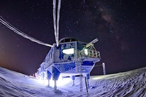
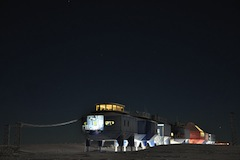
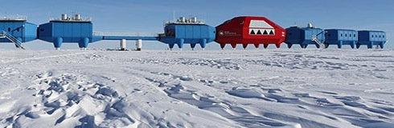
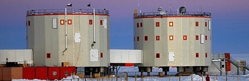

British Antarctic Survey Halley Research Station
Research Station

The British Antarctic Survey's new research station at Halley Bay is a portable pod structure that uses scent, colour and curves to take the edge off the world's longest winter
Hugh Broughton

The British Antarctic Survey's new research centre, Halley VI, by architects Hugh Broughton.
Halley Bay
The British Antarctic Survey's new research station at Halley Bay is a portable pod structure that uses scent, colour and curves to take the edge off the world's longest winter
Extreme isolation
The British Antarctic Survey's new research centre, Halley VI, by architects Hugh Broughton.
Research Station
Its drum-like shapes are designed to be as efficient as possible in retaining heat. The European Space Agency has studied the effects on inhabitants of extreme isolation here, to see how astronauts could cope with long space missions
The British Antarctic Survey
The problems were that its interiors had no light, its shape deformed under the weight of snow, and inhabitants had to live with the sound of ice cracking overhead. It was eventually completely engulfed and abandoned in 1992
Copyright all text and images Guardian.co.uk